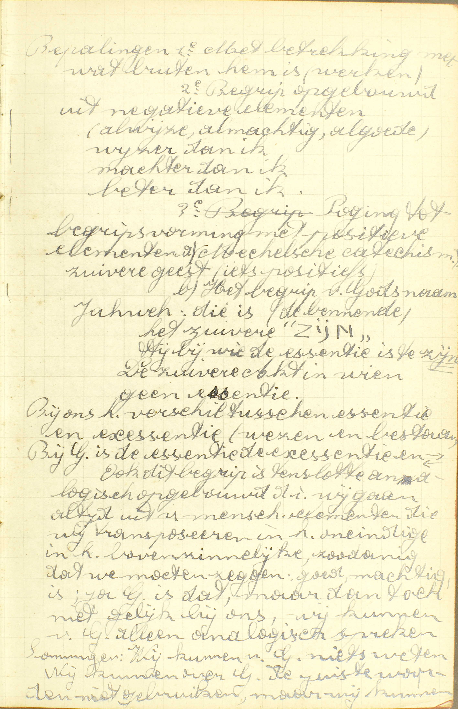
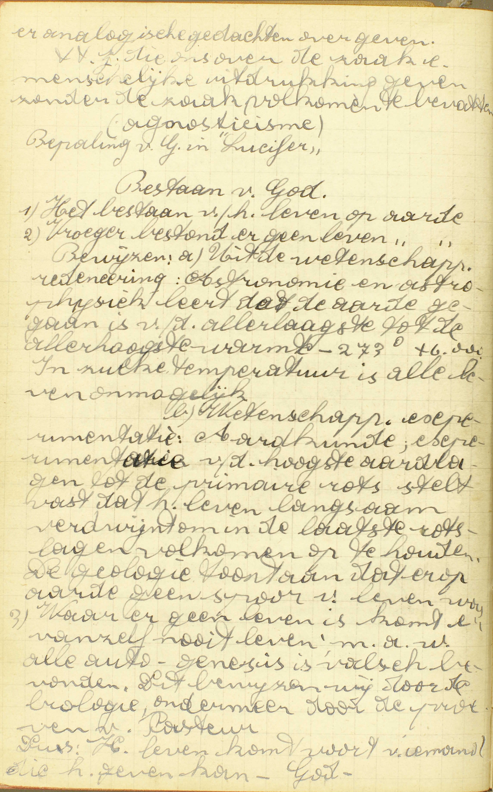
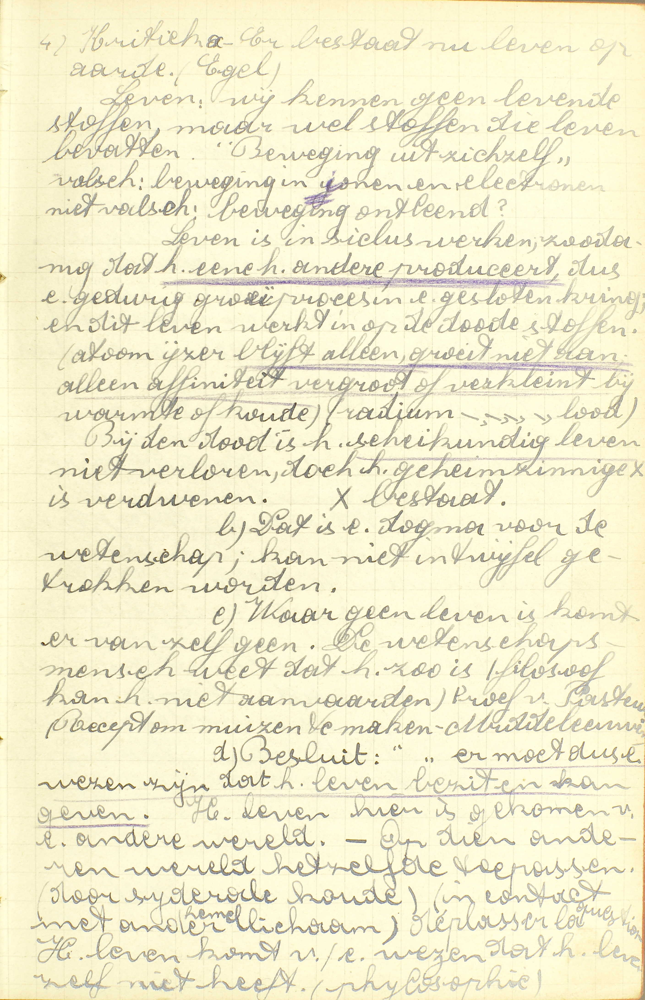
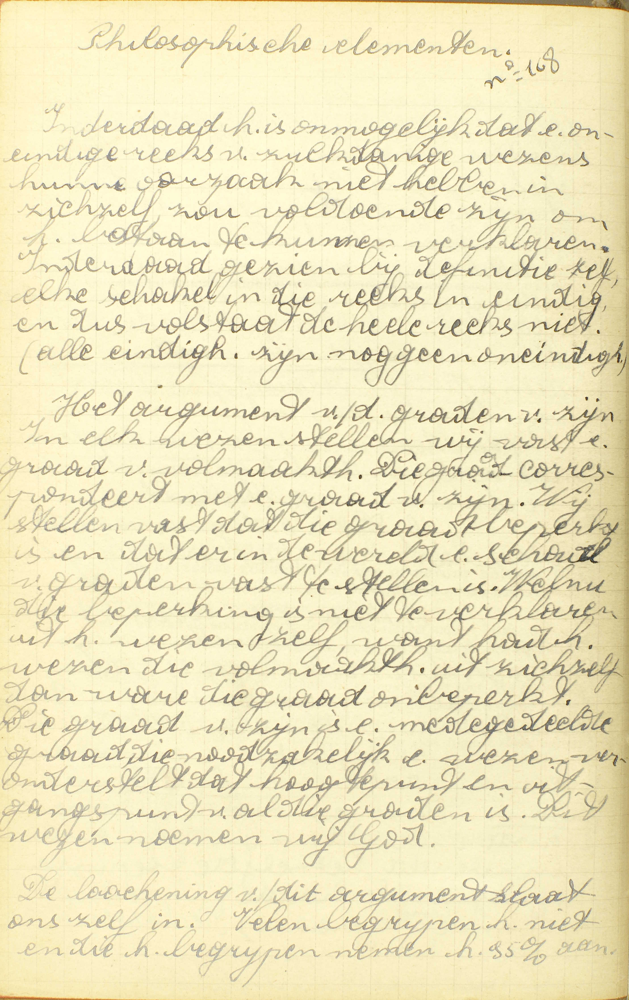
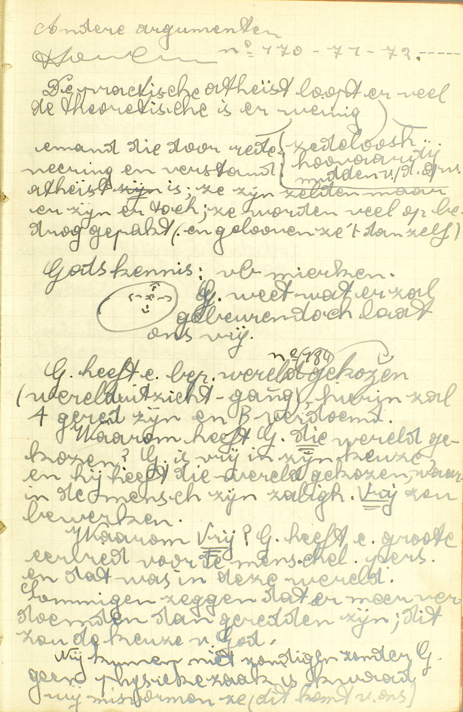
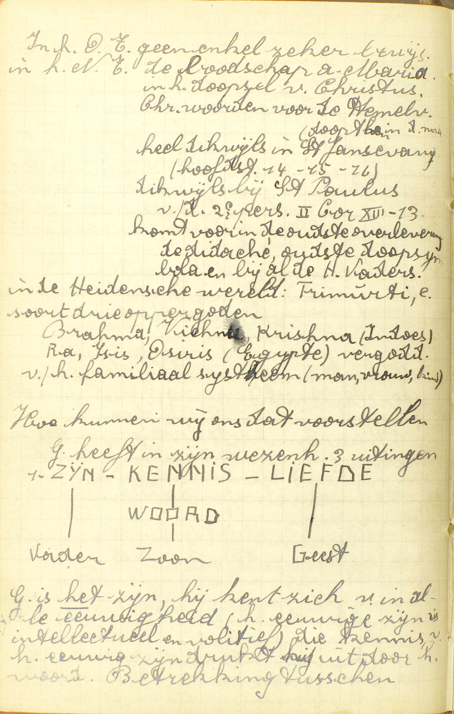
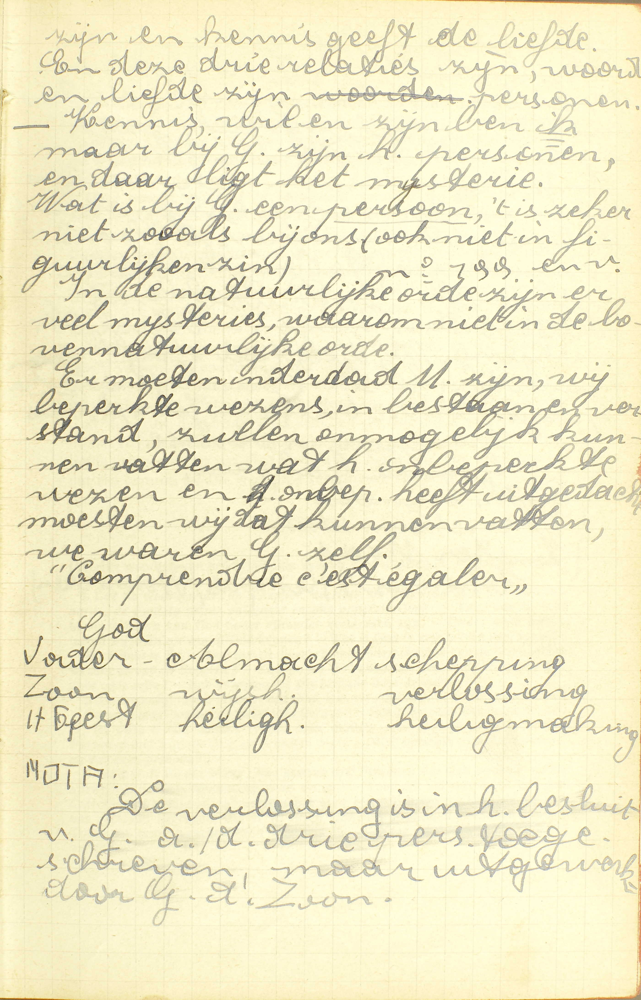
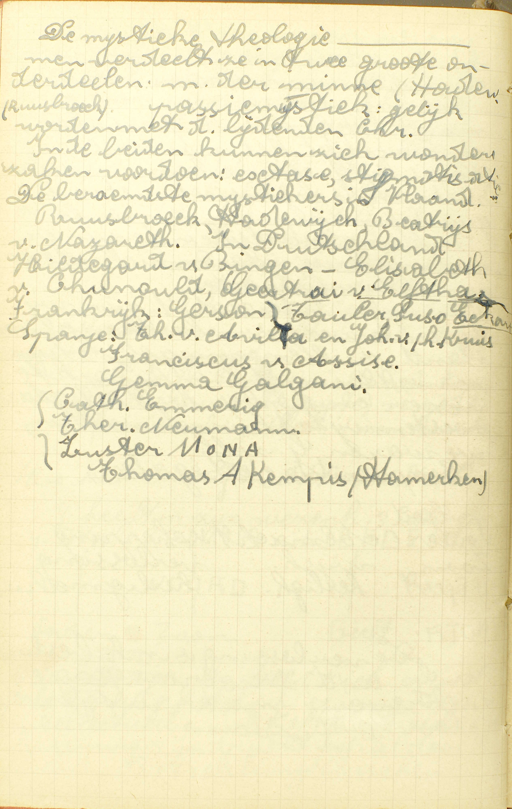

BEKNOPTE VERKLARING
van de
MECHELSE CATECHISMUS
ten gebruike van het middelbaar onderwijs
EERSTE DEEL
–
VIJFDE LES
Van God de Vader almachtig en van de H. Drievuldigheid
| Ik geloof in God | Natuur van God | Wat is God? | ||||
| Hoeveelmaal de goddelijke natuur bestaat | Hoeveel goden zijn er? | Hoe kunnen drie Personen één God wezen? | ||||
| Wat is de H. Drievuldigheid? | ||||||
| Plaats waar God is | Waar is God? | |||||
| De Vader | De hoeveelste Persoon in de H. Drievuldigheid | Welke is de eerste Persoon van de H. Drievuldigheid? | ||||
| Is God de Vader ouder of meerder dan de Zoon of de H. Geest? | ||||||
| Almachtig | Reden van deze naam | Waarom wordt God de Vader, meer dan de Zoon, almachtig genoemd? | ||||
Wat is God?
De Schepper, Heer en Regeerder van hemel en aarde, de Fontein van onze zaligheid en ons opperste Goed
   A. God is de Schepper: degene die een wezen van niet maakt, zonder voorbestaande stof, door zijn enkelen wil, — Heer: bezitter of eigenaar — en Regeerder: bestierder van hemel en aarde: van al wat buiten Hem bestaat, of van hemel en aarde met al wat zij bevatten, te weten: engelen, mensen, dieren, planten, zon, maan, sterren, zee enz, — de Fontein van onze zaligheid: de oorsprong van ons eeuwig geluk en van de hulp die wij nodig hebben om dat geluk te bekomen, — en ons opperste Goed: Hij zelf of het aanschouwen aanschijn aan aanschijn van zijn volmaaktheden maakt onze zaligheid of ons eeuwig geluk uit; dit aanschouwen is het grootste geluk dat de mens kan bezitten, en zelfs een gans bovennatuurlijk geluk: wij zijn er immers enkel uit loutere goedheid Gods toe geroepen.
De drie eerste hoedanigheden zeggen ons, wat God is ten opzichte van alle schepselen, en de twee laatste, wat Hij is ten opzichte van onze zaligheid. Alle vijf zijn allernauwst met elkander verbonden: wie de schepper is van hemel en aarde, is er ongetwijfeld de heer van; want, wie door zich zelf iets maakt, is de eigenaar, de meester van zijn werk; dan, de heer van iets is er ook de regeerder van, daar het bestier aan de oppermeester toebehoort; eindelijk moet de schepper, de eerste oorsproug van alles, ook de fontein of de bron zijn van ons eeuwig geluk en van de daartoe te gebruiken middelen, alsmede ons opperste goed; want, als oorsprong van al het geschapene, moet hij alle andere zaken in grootheid, schoonheid, waardigheid en aangenaamheid oneindig overtreffen.
Wij weten nu wat God is ten opzichte van al hetgeen buiten Hem bestaat. In zich zelf is Hij een enkele geest van oneindige volmaaktheid. Door de woorden: een enkele geest, onderscheiden wij Hem van al de wezens die een lichaam hebben, en door die van oneindige volmaaktheid, van de engelen, die ook geesten zijn, maar slechts een beperkte volmaaktheid hebben.
Dat er een God bestaat, schepper van hemel en aarde, weten wij niet alleen door het Geloof, maar ook door onze rede. Inderdaad, wij zien heel klaar, dat al hetgene niet noodzakelijk bestaat, of zou kunnen niet bestaan, een oorzaak vraagt: zoo, als wij getuige zijn van een brand, zoeken wij er natuurlijk de oorzaak van. Welnu, er is niets op de aarde dat noodzakelijk bestaat, en zo de eerste oorzaak van al de andere dingen wezen kan, want al wat wij hier kennen, zou kunnen niet bestaan en is veranderlijk. Daarom moeten wij besluiten, dat er, buiten deze wereld, een eerste oorzaak bestaat, die alles geschapen heeft, en die bijgevolg God is.
Hoeveel goden zijn er?
Daar is maar één God; zó nochtans dat er drie Personen zijn, te weten: de Vader, de Zoon en de H. Geest
 A. Daar is maar — één God: een goddelijk wezen of natuur; zó nochtans dat er drie Personen zijn: hoewel er nochtans drie verscheidene goddelijke Personen bestaan, die dat één goddelijk wezen of natuur hebben, te weten: de Vader, de Zoon en de H. Geest.
Men bemerke wel, dat deze twee punten: één God en drie goddelijke Personen, niet met elkander strijden; want, door één God, verstaan wij één goddelijk wezen of natuur, en, door drie goddelijke Personen, niet drie goddelijke wezens of naturen, maar drie ware goddelijke Personen. Welnu, natuur of wezen en persoon zijn gans verschillende zaken: door natuur betekenen wij hetgene, waardoor een zaak zulk een zaak is en niet een andere: zo is de natuur van een boom datgene, waardoor hij boom, en niet steen of dier of iets anders is: de natuur van een mens is datgene, waardoor hij mens is, te weten, zijn ziel en zijn lichaam; maar door persoon duiden wij een redelijke natuur aan, die op zich zelve of onafhankelijk van andere bestaat en werkt.
Hoe kunnen drie Personen één God wezen?
Omdat zij alle drie maar één en hetzelfde goddelijk wezen of natuur hebben
    A. Omdat zij alle drij, niet elk een verscheiden, maar slechts één en hetzelfde goddelijk wezen of natuur hebben. Deze reden is klaarblijkend: inderdaad, verscheidene mensen zijn niet één mens, maar verscheidene mensen, omdat ieder van hen zijn eigen en van de andere personen verscheidene natuur heeft; integendeel iedere goddelijke Persoon heeft geen eigeneen van de andere Personen verscheidene natuur, want zij hebben alle drie maar één en hetzelfde goddelijk wezen of natuur, en zo zijn er niet drie goden of drie goddelijke naturen, maar één God, een goddelijke natuur.
Deze waarheid: drie goddelijke Personen en één God, is een waar mysterie (zie 2ᵉ les, 6ᵉ v.), dat wij maar in de hemel klaar zullen verstaan.
Waar is God?
In de hemel, op de aarde en op alle plaatsen
A. In de hemel: in de plaats van de gelukzaligen, op de aarde: hier op deze wereld, en op alle plaatsen: op al de andere bestaande plaatsen, zoals de hel en het vagevuur. Hij is dus overal.
God is overal tegenwoordig 1° met zijn wezen of natuur, 2° met zijn alziende oog en 3° met zijn macht. De mens is met zijn natuur slechts tegenwoordig op de plaats die door zijn lichaam ingenomen wordt; maar God is met zijn wezen op alle plaatsen. De mens is met zijn kennis slechts in een beperkten kring aanwezig; God echter omvat met zijn oneindige wijsheid alle plaatsen, De mens kan met zijn macht maar op kleinen afstand iets teweegbrengen; God integendeel oefent zijn macht op alle plaatsen uit met alles te bestieren en te bewaren.
Wat is de Heilige Drievuldigheid?
God de Vader, God de Zoon, en God de H. Geest; drie Personen en één God
V. De zin is: wat verstaat men door de H. Drievuldigheid?
A. Hierdoor verstaat men het mysterie, waar reeds herhaalde malen van gesproken is, te weten: God de Vader, God de Zoon, en God de H. Geest; drie Personen en één God. Het woord Drievuldigheid, aangenomen om dit mysterie te benoemen, betekent uit zich zelf een wezen dat, onder een opzicht, één en, onder een ander, drievuldig is.
Welke is de eerste Persoon van de Heilige Drievuldigheid?
God de Vader, die het beginsel en de oorsprong is van de andere twee Personen
A. De reden dus waarom God de Vader de eerste Persoon is van de H. Drievuldigheid, bestaat hierin, dat Hij het beginsel en de oorsprong is van de andere twee Personen. Hij is hun beginsel met hun oorsprong te zijn; beiden immers komen van Hem voort: de Zoon komt voort van de Vader door het verstand, want Hij is het oneindig volmaakt denkbeeld, dat de Vader van zich zelf heeft; de H. Geest komt voort van de Vader en de Zoon door de wil of door de liefde, want Hij is de liefde van de Vader en van de Zoon tot elkander.
Men bemerke dat het leven van alle wezens die met kenvermogen begaafd zijn, in deze drie akten geheel besloten ligt: de daad van te kennen, het gedacht van de gekende zaak en de liefde tot het gekende, en dat er zo in God, in wie die akten personen uitmaken, noodzakelijk drie personen zijn, maar dat er niet meer dan drie kunnen zijn.
Is God de Vader ouder of meerder dan de Zoon of de Heilige Geest?
Neen; want gelijk zij maar één goddelijk wezen hebben, zo zijn zij alle drie even oud of eeuwig, wijs en machtig
A. Neen, de drie goddelijke Personen zijn alle drie even oud of eeuwig, wijs en machtig, omdat zij maar één goddelijk wezen hebben. Deze reden is zeer duidelijk: de hoedanigheden van ouderdom, wijsheid en macht hangen van de natuur af; bijgevolg moeten de drie goddelijke Personen noodzakelijk even oud of eeuwig, wijs en machtig zijn, aangezien zij alle drie maar één en hetzelfde goddelijk wezen of natuur hebben. Waren er twee menselijke personen, hebbende één en dezelfde natuur, zij zouden ook noodzakelijk even oud, wijs en machtig zijn. De eeuwigheid van God is hierin gelegen, dat zijn bestaan zonder begin, zonder einde en zonder opvolging van stonden is.
Waarom wordt God de Vader, meer dan de Zoon, almachtig genoemd?
Niet omdat Hij machtiger is, maar omdat de macht Hem bijzonder wordt toegeschreven; gelijk ook de wijsheid de Zoon, en de heiligheid de H. Geest
V. Waarom wordt God de Vader, in het Symbolum, almachtig genoemd meer dan de Zoon, wie deze naam daarin niet gegeven wordt?
A. Niet, omdat hij — machtiger ís: wezenlijk meer macht heeft dan God de Zoon, maar omdat de macht Hem, in de Christelijke Leer, wij zeggen niet uitsluitelijk, maar bijzonder: op een bijzondere wijze wordt toegeschreven; gelijk daarin ook de wijsheid de Zoon, en de heiligheid de H. Geest bijzonder toegekend worden.
Door macht, wijsheid en heiligheid verstaan wij hier niet alleen deze hoedanigheden zelven, maar ook de werken die er uit voortspruiten. De werken van almacht, zoals het scheppen, worden aan God de Vader toegeschreven; de werken, waar in het bijzonder wijsheid of verstand in uitschijnt, zoals het goddelijk bestier van de wereld, aan God de Zoon; en die, waar Gods liefde zich meest in vertoont, zoals het uitdelen van de gratiën, aan God de H. Geest. De macht wordt de Vader bijzonder toegeschreven, omdat Hij het beginsel en de oorsprong is van de andere twee Personen, en dat door die macht van voortbrenging God alle dingen kan maken en te niet doen; de wijsheid de Zoon, omdat Hij van de Vader voortkomt door het verstand en het denkbeeld is dat deze van zich zelf heeft, en dat God door dit denkbeeld alles kent, en de heiligheid de H. Geest, omdat Hij de liefde is van de Vader en van de Zoon, en Gods heiligheid in die liefde gelegen is; en dat God door zijn heiligheid alle goed bemint dat Hij bemint, en alle weldaden vergunt die Hij vergunt.
VRAGEN
Welke woorden van het Symbolum worden hier uitgelegd? — Wat onderzoekt de Catechismus nopens ieder punt?
Leg de woorden uit: de Schepper, de Heer, de Regeerder van hemel en van aarde, de Fontein van onze zaligheid, en ons opperste Goed. — Toon hoe al deze hoedanigheden van God onder elkander verbonden zijn. — Onder welk betrek leren wij in dit antwoord God kennen? — Wat is God in zich zelf beschouwd? — Waardoor is Hij in deze laatste beschrijving onderscheiden van de lichamelijke wezens en van de Engelen? — Kennen wij God uitsluitend door het Geloof, of ook door onze rede? — Hoe bewijzen wij zijn bestaan door de rede?
Als men zegt: daar is maar één God, wat verstaat men door het woord God? — Hoeveelmaal bestaat de goddelijke natuur? — Hoeveel goddelijke Personen zijn er, en welk is hun naam? — Zijn deze twee punten: één God en drie Goddelijke Personen niet tegenstrijdig, en waarom niet? — Wat verstaat men door natuur, en wat door persoon?
Welk is de zin van de vraag: Hoe kunnen drie Personen één God wezen? — Hoe antwoordt de Catechismus op deze vraag? — Toon dat het antwoord van de Catechismus geldig is, en verklaar het door een voorbeeld. — Kunnen wij met ons verstand begrijpen, dat er in één God drie goddelijke Personen zijn? — Toon dat deze waarheid een mysterie is. — Waar zullen wij dit mysterie verstaan?
Wat verstaat men door hemel, aarde en alle plaatsen? — Is er een plaats waar God niet is? — Op welke wijze is God overal tegenwoordig? — Maak een vergelijking tussen de tegenwoordigheid van de mens en die van God.
Hoe noemt men dit mysterie: drie Personen en één God? — Wat betekent het woord Drievuldigheid uit zijn natuur, en hoe is het aangenomen om het gezegde mysterie uit te drukken?
Noem de eersten Persoon van de H. Drievuldigheid. — Waarom is Hij de eerste? — Leg de woorden uit: beginsel en oorsprong. — Hoe is Hij het beginsel van de andere twee Personen?
Brengt het vaderschap van God de Vader niet mede, dat Hij ouder of meerder is dan de Zoon of de H. Geest? — Geef volgens de Catechismus de reden hiervan. — Toon dat deze reden geldig is; en verklaar ze door een voorbeeld. — Waarin is de eeuwigheid van God gelegen?
Welke naam wordt aan God de Vader in het Symbolum gegeven? — Wat betekent die naam voorzeker niet, en waarom is hij aan God de Vader gegeven? — Wat wordt er toegeschreven aan God de Zoon en wat aan de H. Geest? — Wat verstaat men hier door macht, wijsheid en heiligheid? — Waarom worden die drie dingen aan de verscheidene goddelijke Personen toegeschreven? — Wordt iedere hoedanigheid uitsluitelijk aan één Persoon toegeschreven?